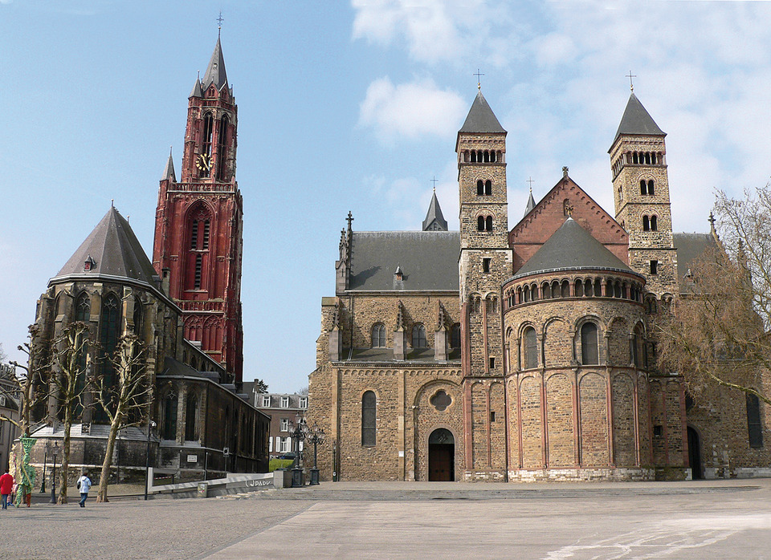

HoofdStuk 6.3

--------------------------------
De machtige kerk
Op 10 juni 1194 werden de kerk en de huizen van de Franse stad Chartres door een felle brand verwoest. Na de brand legden burgers enorme bedragen bij elkaar om een nieuwe kerk te bouwen die groter en mooier moest worden dan de oude.
Ook in andere steden en dorpen gaf de burgerij veel geld uit aan kerkenbouw (afbeelding 18). Zo lieten ze zien hoe rijk en godsdienstig ze waren. Tussen 1000 en 1200 werden stenen kerken gebouwd die leken op vroegere Romeinse bouwwerken. Deze romaanse kerken hadden kleine ramen met ronde bogen in dikke muren.
Tussen 1200 en 1500 werden kerken gebouwd in de gotische bouwstijl. Gotische kerken waren hoger dan romaanse. Ze hadden dunnere muren die vaak aan de buitenkant werden ondersteund door stenen bogen. De ramen waren groot, hadden spitse bogen en kleurrijke afbeeldingen van glas in lood.
Terug